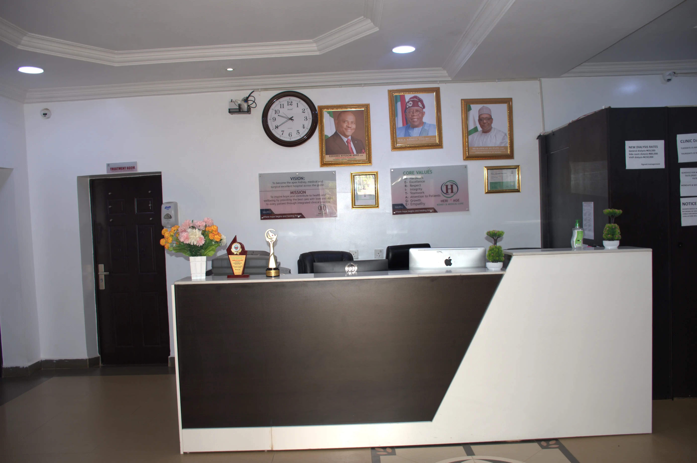
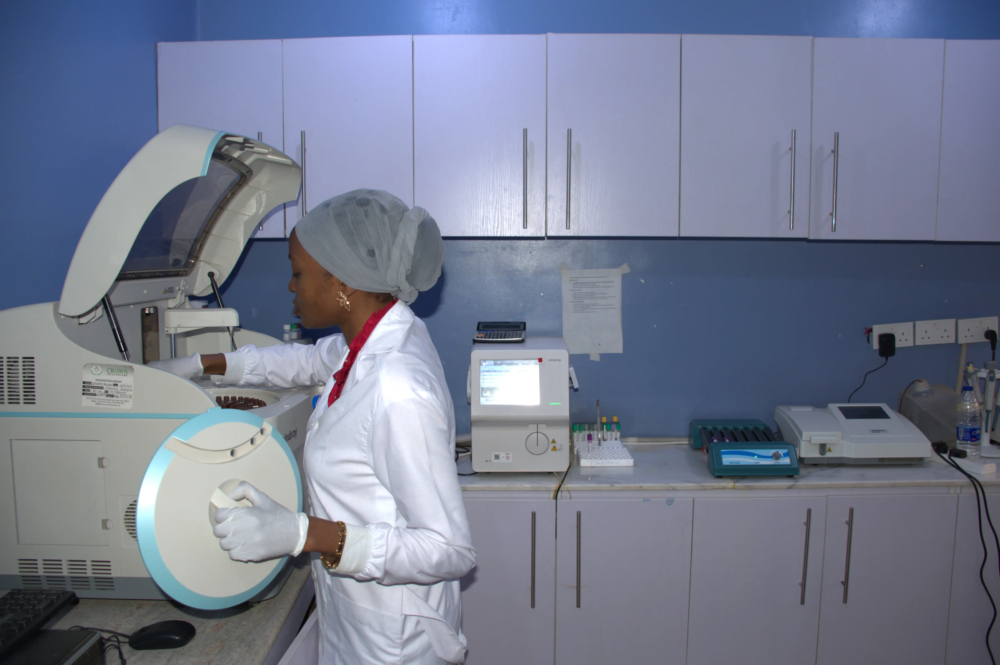
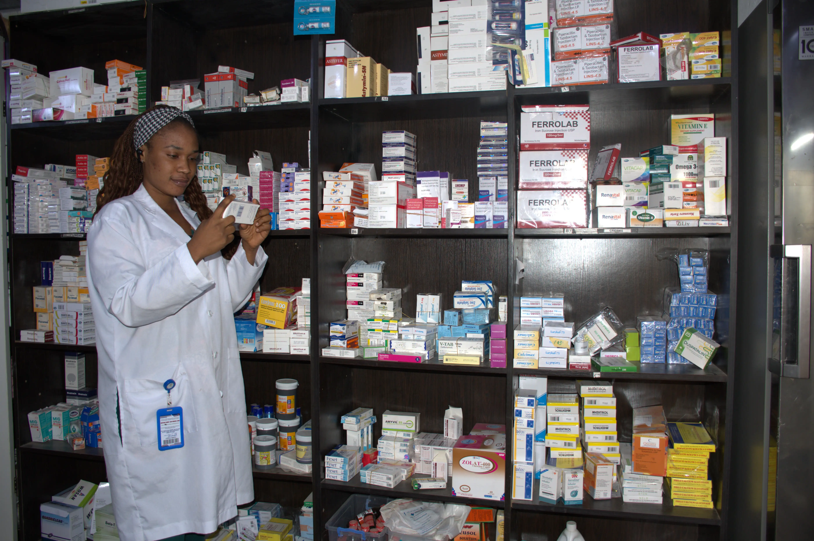
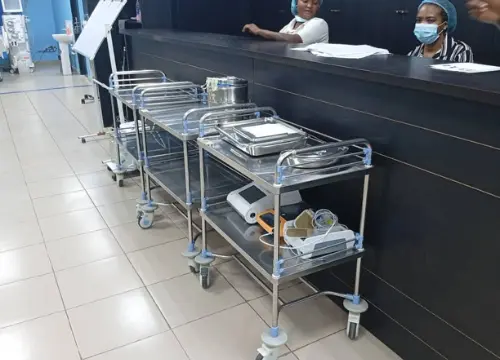
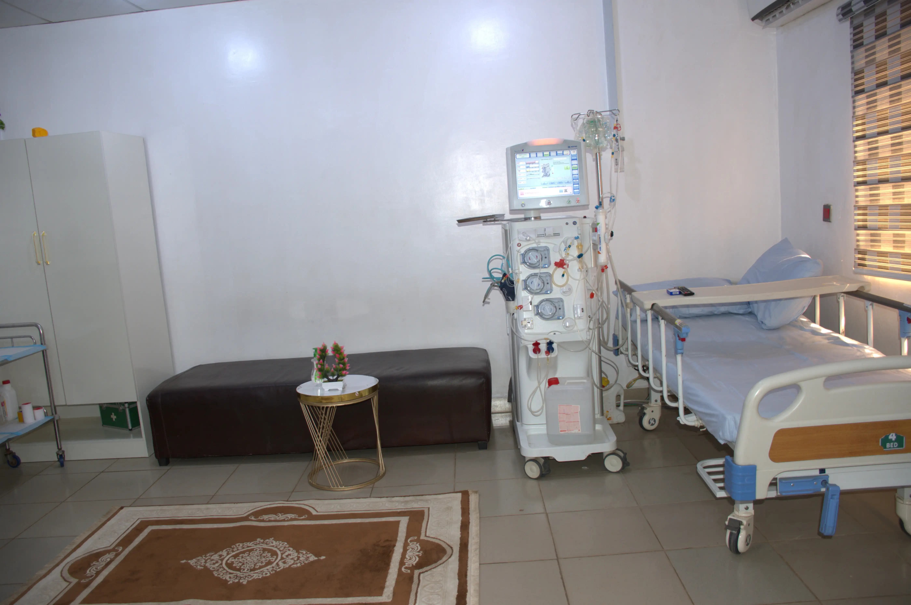

New Patients Process
Reception Unit – Registration
Upon arrival, the patient is received at the reception.
- Personal details (name, age, contact, next of kin) are collected.
- A hospital number or patient file is created.
- For returning patients, records are retrieved.
- The patient is then directed to the next point.

Cash Point – Payment
The patient proceeds to the cash point for necessary payments.
- Consultation and service fees are paid.
- Receipts are issued as proof of payment.
- Insurance or health plans may be verified if applicable.
- The patient is directed to the next unit after payment.
A&E / Triage – Vital Signs Check
The patient undergoes initial assessment at the A&E or triage unit.
- Vital signs such as temperature, blood pressure, and pulse are taken.
- The patient’s condition is assessed for urgency.
- Critical cases are prioritized for immediate attention.
- The patient is then directed to the medical officer.
Medical Officer – Consultation
The patient meets with the medical officer for proper evaluation.
- Symptoms are discussed and medical history is reviewed.
- A physical examination is conducted.
- A preliminary diagnosis is made.
- The next step of care is determined based on findings.
Laboratory Unit – Investigations
Patients are referred to the laboratory for necessary tests.
- Samples such as blood, urine, or others are collected.
- Tests are conducted based on the doctor’s request.
- Results are processed and documented.
- Findings are sent back to the doctor for review.

Pharmacy Unit – Medication Dispensing
Patients receive prescribed medications from the pharmacy.
- Drugs are dispensed based on the doctor’s prescription.
- Instructions on dosage and usage are provided.
- Patients are educated on proper medication use.
- Clarifications and questions are addressed by the pharmacist.

Ward – Admission
Patients who require close monitoring are admitted into the ward.
- Patients are assigned beds and admitted.
- Nurses and doctors provide continuous care.
- Vital signs and progress are regularly monitored.
- Treatment plans are followed for recovery.

Dialysis Unit – Specialized Care
Patients with kidney-related conditions are managed in the dialysis unit.
- Dialysis treatment is carried out under supervision.
- Patients are monitored during the procedure.
- Specialized equipment is used for treatment.
- Follow-up care is provided after each session.

Consultants – Specialist Care
Patients are referred to consultants for advanced medical attention.
- Cases beyond general consultation are handled.
- Specialists provide expert diagnosis and treatment.
- Advanced procedures or interventions may be recommended.
- Patients receive specialized and focused care.